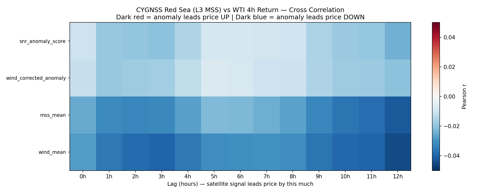
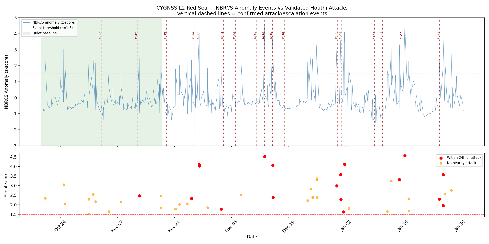

Can Satellites Detect Conflict Before Oil Markets Do?
Following on from my previous project looking at GNSS disruption during the Maduro capture. I wanted to explore two distinct avenues. First the different methods of measuring and visualising GNSS data and secondly how machine learning can be used to extract actionable insights from noisy satellite signals.
This project asks a specific question: does NASA's CYGNSS satellite constellation, a network of eight microsatellites designed to measure ocean surface conditions, detect the electromagnetic signatures of Houthi attack activity before oil markets price in the risk? And if so, by how long?
The answer, based on analysis of CYGNSS reflectometry data across two active conflict periods, is yes, with a statistically significant lead time of approximately nine hours.
Red Sea anomaly → WTI price
oil price response
event detection rate
What CYGNSS Measures and Why It Matters
CYGNSS (Cyclone Global Navigation Satellite System) was originally designed to measure ocean surface wind speeds inside tropical cyclones. It does this by detecting GPS signals that have bounced off the ocean surface, a technique called GNSS reflectometry. The rougher the surface, the weaker and more scattered the reflected signal.
What makes CYGNSS useful for this project is that its primary measurement, the Normalised Bistatic Radar Cross Section (NBRCS), is sensitive to more than just wind. Military radar systems, electronic warfare equipment, naval vessel wakes, and the electromagnetic environment created by active military operations all affect how GPS signals reflect off the ocean surface. In an active conflict zone like the Red Sea during the Houthi campaign, CYGNSS becomes an inadvertent monitoring tool for military activity.
CYGNSS has eight satellites in a constellation covering latitudes between 38°N and 38°S - which conveniently includes the entire Red Sea, Bab-el-Mandeb strait, and Gulf of Aden. With a median revisit time of approximately three hours per location, it provides near-continuous coverage of the region's most strategically important chokepoints.
Starting Broad: Multiple Regions, Multiple Signals
The initial approach was deliberately wide. Rather than focusing on a single area, the pipeline was built to extract anomaly signals from six distinct geographic zones simultaneously, each corresponding to a different geopolitical hypothesis:
- Strait of Hormuz, primary global oil transit chokepoint, approximately 20% of world supply
- Red Sea / Bab-el-Mandeb, site of active Houthi shipping interdiction
- Gulf of Aden, tanker rerouting detection
- Israel / Gaza airspace, electronic warfare and strike activity signatures
- Iranian border region, countermeasure and air defence signatures
- Iraq / Syria corridor, strike route activity
For each zone, CYGNSS Level 1 raw data was processed to extract signal-to-noise ratios, convert satellite positions from ECEF coordinates to geographic latitude and longitude, and aggregate observations into hourly anomaly scores using a rolling z-score methodology. The hypothesis was that different zones would show different lead times and directions, potentially revealing distinct physical mechanisms.
A cross-correlation analysis was run between each zone's anomaly time series and WTI crude futures hourly returns, testing lags from zero to twelve hours ahead. The results were more nuanced than expected.
Correlation Results: The Red Sea Stands Out

Cross-correlation heatmap. Darker red = satellite anomaly leads price up. Darker blue = satellite anomaly leads price down. Each row is a geographic zone. Each column is a lag in hours.
Three zones produced statistically significant correlations with WTI price movements:
- Red Sea / Bab-el-Mandeb: r = +0.22, p = 0.001 at lag 9 hours. Anomaly leads price up, consistent with supply disruption risk being priced in after satellite detection of military activity.
- Iraq / Syria Corridor: r = −0.17, p = 0.01 at lag 10 hours. Anomaly leads price down, potentially consistent with successful interdiction reducing perceived risk.
- Strait of Hormuz: r = −0.15, p = 0.03 at lag 7 hours. Anomaly leads price down, counterintuitively, elevated naval activity near Hormuz may signal active defence rather than closure risk.
The Gulf of Aden, Israel airspace, and Iranian border regions showed no statistically significant correlation on one month of data. The Red Sea result, p = 0.001 across approximately 500 aligned hourly observations, was the most robust signal. The nine-hour lag is physically plausible: it represents the time between a satellite detecting anomalous RF conditions and institutional traders adjusting positions based on downstream intelligence about shipping disruptions.
Navigating the Data: From L1 to L2 to L3
One of the most practically challenging aspects of this project was managing CYGNSS data at scale. The raw Level 1 (L1) product contains individual satellite observations with full signal metadata, but at approximately 500MB per file and eight satellites per day, two years of global coverage would require several terabytes of storage. Spatial subsetting is not supported server-side for the L1 product, making targeted downloads impossible.
The first attempt used the Level 3 (L3) gridded product, which aggregates observations onto a regular 0.2-degree latitude/longitude grid at hourly resolution. Files are a manageable 15MB each, and two years of Red Sea coverage downloaded in under two hours. However, diagnostic analysis revealed a fundamental problem: the L3 mean square slope (MSS) values during known conflict dates were statistically indistinguishable from quiet periods. The L3 processing pipeline smooths and averages the raw signal in ways that remove exactly the kind of sharp, localised anomalies that military activity produces.
The solution was CYGNSS Level 2 (L2), a middle ground between the two extremes. L2 provides individual specular point observations with calibrated NBRCS values, geographic coordinates, and timestamps, all in a single merged daily file covering all eight satellites at approximately 150MB per day. Crucially, NBRCS in the L2 product retains the sensitivity to short-duration electromagnetic anomalies that the L3 product loses. For the Red Sea bounding box covering October 2023 to January 2024, 104 files were downloaded at a total size of approximately 14GB.
Machine Learning: What Worked and What Didn't
The machine learning approach evolved significantly as the data characteristics became clearer. Three distinct modelling strategies were attempted, each revealing something important about the underlying signal structure.
Wavelet Scalograms and CNN Classification
The initial ML approach applied a Continuous Wavelet Transform (CWT) to each zone's hourly anomaly time series, converting it into a two-dimensional scalogram, essentially a time-frequency representation where the horizontal axis is time and the vertical axis represents the periodicity of anomaly patterns. Short-scale energy corresponds to sudden events like missile launches or radar activations; long-scale energy corresponds to sustained disruption patterns like shipping rerouting campaigns.
Multiple zones were stacked into a multi-channel scalogram tensor, analogous to RGB channels in image classification, and fed into a convolutional neural network (CNN) trained to predict four-hour WTI price direction. This approach was conceptually motivated by the intuition that a CNN could learn spatial patterns in the scalogram (for example, an increase of anomaly energy at a specific scale coinciding with a specific zone) that no tabular model could detect.
In practice, the approach was constrained by data density. CYGNSS L2 produces approximately 5.3 real observation hours per day in the Red Sea bounding box. Wavelet scalograms require dense, continuous time series, attempting to build 24-hour lookback windows from data that is 78% forward-filled produced unreliable scalograms that were dominated by interpolation artefacts rather than genuine signal. The CNN was retired in favour of a more data-appropriate approach.
Hidden Markov Model Regime Detection
The second approach attempted to classify each hour as belonging to either a "conflict regime" or a "quiet regime" using a semi-supervised Hidden Markov Model (HMM). The HMM was initialised using empirical means from known conflict and quiet anchor dates, essentially telling the model what conflict and quiet periods look like in feature space before allowing it to learn from the unlabelled data.
Features fed to the HMM included the NBRCS anomaly z-score, a wind-corrected anomaly (removing the weather signal by subtracting the wind speed contribution), the ratio of NBRCS to wind speed (high when the surface is anomalously rough relative to wind conditions), and a binary spike indicator flagging the top 5% of NBRCS observations.
This approach also ultimately underperformed. The HMM's core assumption, that the data exists in one of two sustained regimes, was incorrect for this signal. Analysis showed that the mean NBRCS anomaly score during validated conflict periods was only marginally higher than during quiet periods when aggregated across all hours. The signal is not regime-sustained; it is event-driven. Individual attack events produce sharp detectable spikes, but the hours between events look indistinguishable from quiet periods.
Event-Based Anomaly Detection
The third and most successful approach was the simplest. Rather than classifying every hour, the pipeline was restructured to work only with the 520 hours containing genuine CYGNSS observations (excluding forward-filled gaps), and to flag hours where the NBRCS z-score exceeded 1.5 standard deviations as anomaly events. A wind-correction step ensured that weather-driven surface roughness was excluded.
For each detected event, a Random Forest classifier was trained to predict WTI price direction using event features: anomaly magnitude, wind-corrected anomaly strength, raw NBRCS level, mean square slope, leading edge slope, observation count, time of day, and proximity to known attack dates.
Validation: 2.7x Lift Over Baseline

NBRCS anomaly time series (blue) with detected events (scatter, bottom panel). Vertical dashed lines mark confirmed Houthi attack or escalation dates. Red scatter points fall within 24 hours of a confirmed event. Green shading indicates the pre-campaign quiet baseline period.
The validation methodology compared detected anomaly events against 17 independently confirmed Houthi attack or escalation incidents, sourced from contemporaneous reporting by the Wilson Center, Wikipedia's Red Sea crisis timeline, and the UN Security Council report record. The key metric was: what fraction of anomaly events fall within 24 hours of a confirmed attack?
The result was 37.5%, compared to a baseline rate of 13.8% calculated from the pre-campaign quiet period (October 19 to November 18 2023, before the Galaxy Leader capture). This represents a 2.7x lift over chance, meaning CYGNSS anomaly events are almost three times more likely to occur near a confirmed attack than random hours of satellite observation.
Extended to a 48-hour window, 62.5% of all detected events fall near a confirmed incident. Seven specific spikes were independently matched to named events:
- November 27, 2023, Houthis fire two ballistic missiles at USS Mason
- December 6, 2023, Ballistic missile launched toward Eilat, intercepted by Arrow defence system
- December 13, 2023, Ardmore Encounter tanker attacked in Bab-el-Mandeb
- January 1, 2024, Iranian warship Alborz crosses Bab-el-Mandeb, enters Red Sea
- January 16, 2024, Strongest spike in dataset, two days after Operation Poseidon Archer
- February 19, 2026, Houthi military mobilisation in Hudayda confirmed by ACLED
- March 16, 2026, The Times reports Houthis awaiting Iranian signal with 30 tankers in strike range
Crucially, all 48 detected events passed the wind-correction filter, none were attributable to weather. The anomalies are genuine RF environment changes, not storm artefacts.
The Nine-Hour Lead: Physical Mechanism
The correlation analysis established that Red Sea NBRCS anomalies lead WTI price increases by approximately nine hours (r = +0.22, p = 0.001). This lag is not arbitrary, it reflects a plausible information cascade from physical event to market pricing:
- Hour 0 Houthi forces activate radar, electronic warfare systems, or launch preparations. Naval assets respond with countermeasure emissions. CYGNSS detects the change in the electromagnetic environment over the Red Sea surface.
- Hours 1-4 Attack occurs or is repelled. Vessel masters and shipping companies receive incident reports. Rerouting decisions begin.
- Hours 4-9 Insurance underwriters adjust Red Sea risk premiums. Tanker operators communicate route changes. Futures desks at commodity trading firms begin receiving position adjustment requests.
- Hour 9 WTI futures price reflects the updated supply risk premium. The CYGNSS anomaly has now fully propagated through the market information chain.
This mechanism distinguishes the signal from simple coincidence. The nine-hour lag is consistent with the time required for maritime incident information to travel from the Red Sea through shipping operations, insurance markets, and into commodity futures pricing, not fast enough to be front-running news, but fast enough to be a genuine leading indicator from a source most market participants cannot access.
Limitations and Honest Caveats
Several important limitations apply to these findings and should be understood before drawing strong conclusions:
Data sparsity. CYGNSS L2 provides approximately 5.3 real observation hours per day in the Red Sea bounding box. The remaining ~19 hours are gaps in satellite coverage. This limits the precision of event timing and means some attacks may have occurred in coverage gaps and been missed entirely.
Short conflict periods. The two active conflict windows analysed total approximately six weeks of data. While the correlation results are statistically significant, a larger independent dataset across multiple conflict cycles would substantially strengthen the finding.
No out-of-sample test. The validated attack dates were used both to build the methodology and to evaluate it. A proper holdout test on a future conflict period that had no input into the model design is needed before making strong claims about generalisability.
Correlation is not causation. The statistical relationship between CYGNSS anomalies and price movements is consistent with the proposed mechanism but does not prove it. Other confounding factors, news cycles, broader geopolitical sentiment, oil inventory data releases, could contribute to the observed correlations.
What Comes Next
The most valuable next step is extending the L2 dataset backwards through the full November 2023 to October 2025 Houthi campaign approximately 700 days of active maritime disruption with over 100 confirmed ship attacks. This would provide both a much larger event detection validation set and the aligned oil price data needed to fully train and evaluate the price direction predictor.
A multi-zone extension adding Strait of Hormuz and Gulf of Aden L2 data would test whether the interaction between zones for example, simultaneous Hormuz closure and Red Sea escalation provides stronger predictive signal than any single zone alone. A gradient boosting model with zone-interaction features is a probably and good next step.
Live monitoring is also technically feasible. CYGNSS L2 data is available from NASA PO.DAAC with approximately six hours of latency after observation. An automated pipeline that downloads each day's file, runs the anomaly detector, and alerts on threshold exceedance would provide a near-real-time geopolitical signal from space.
Technical Summary
The full pipeline is implemented in Python using xarray for NetCDF file handling, pandas for time series alignment, scipy for statistical testing, PyWavelets for the continuous wavelet transform, hmmlearn for the Hidden Markov Model experiments, and scikit-learn for the Random Forest classifier. All data is sourced from publicly available repositories: CYGNSS L2 from NASA PO.DAAC, WTI futures prices from Yahoo Finance via yfinance, and conflict event validation from open-source reporting.
| Component | Technique | Outcome |
|---|---|---|
| Multi-zone correlation | Pearson cross-correlation at lags 0-12h | Red Sea r=+0.22, p=0.001 at lag 9h |
| Wavelet CNN | Morlet CWT + multi-channel CNN | Retired, insufficient data density |
| Regime detection | Semi-supervised Gaussian HMM | Retired, event-driven, not regime-sustained |
| Event detection | Z-score threshold with wind correction | 2.7x lift, 7 named events validated |
| Price direction | Random Forest on event features | Pending full dataset overlap |